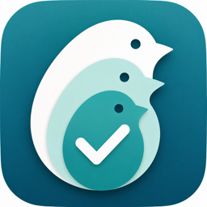
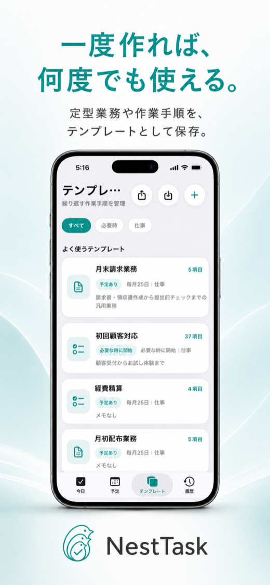
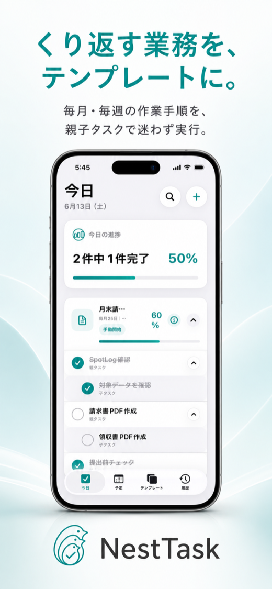
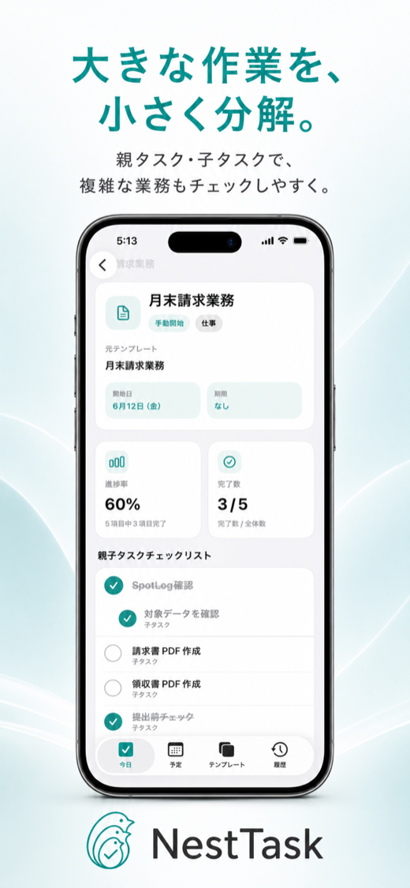
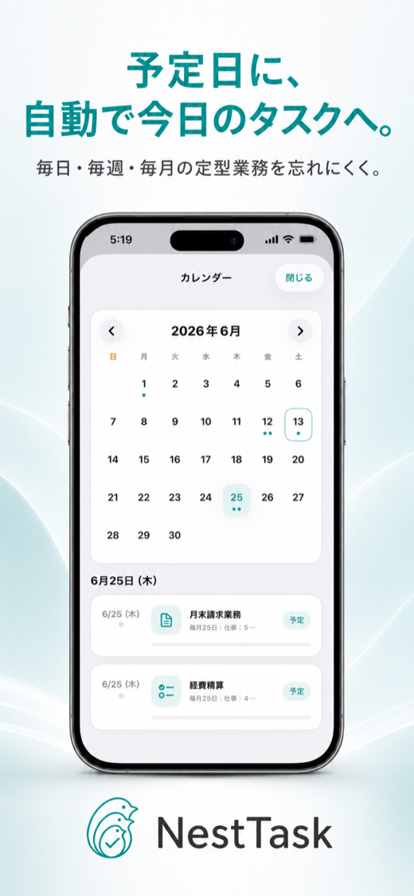
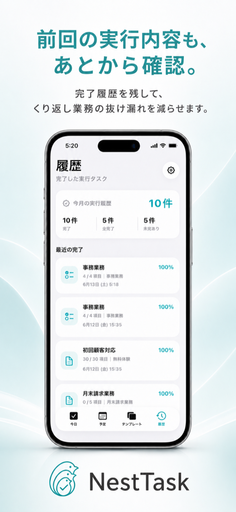

業務の型を作る
定型業務を親タスクと子タスクに分けて登録します。

NestTaskiOS向け 階層式タスク管理アプリ
毎週・毎月の作業手順を親子タスクで管理。毎回「何をやるんだっけ？」を減らします。

Problem
月末業務の手順を毎回思い出している
前回どこまでやったか分からない
チェックリストを何度も作り直している
Todoアプリだと定型業務を管理しづらい
Notionほど重い管理はしたくない
Solution
定型業務を親タスクと子タスクに分けて登録します。
予定日または手動開始で、保存したテンプレートを実行できます。
作業手順がチェックリストになり、抜け漏れを見つけやすくなります。
進捗率と完了数を見ながら、ひとつずつ作業を進められます。
完了した実行タスクを、あとから振り返れます。
使い捨てにせず、次の週や月にも同じ手順を再利用できます。
Features
01
親タスクの中に子タスクを作成。複雑な業務も、手順ごとにチェックできます。

02
毎月・毎週の定型業務や、よく使う作業手順をテンプレートとして保存できます。

03
毎日・毎週・毎月のタスクを予定に合わせて表示。忘れやすい定型業務を確認しやすくします。

04
完了履歴を残して、くり返し業務の抜け漏れを減らします。

For You
Why NestTask
アカウント登録なしで使えます。入力したタスク情報は端末内に保存されます。
大きな作業を小さな手順に分解して管理できます。
何度も使う作業手順を保存し、必要な時に呼び出せます。
チーム共有や複雑な管理機能より、日々の作業を迷わず進めることを重視しています。
Download
NestTaskで、毎週・毎月の作業手順をテンプレート化しましょう。